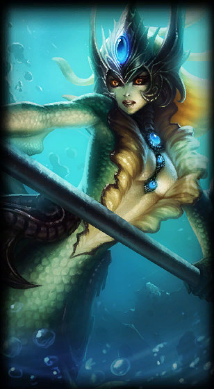

<div class="container">

<div class="content">
  <div class="skills">
    
    
    
    
    
  </div>
  <div class="lore"><h1>Lore</h1>
    <p>Abandonando a Ordem Kinkou e seu título de Punho das Sombras, Akali agora ataca sozinha, pronta para ser a arma mortal que seu povo precisa. Embora ela mantenha tudo o que aprendeu com seu mestre Shen, ela se comprometeu a defender Ionia de seus inimigos, um assassinato de cada vez. Akali pode atacar em silêncio, mas sua mensagem será ouvida em voz alta e clara: “Temam a assassina sem mestre”</p>
  </div>
</div>
</div>
